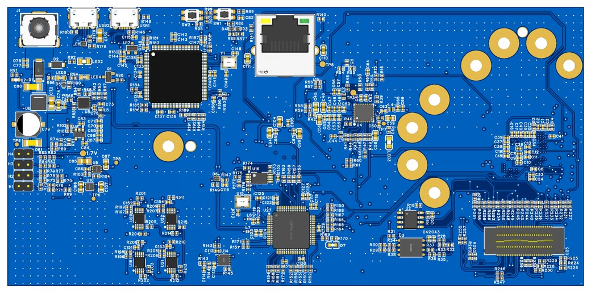

RF · PCB
77 GHz Automotive Radar Board
A custom board for the TI AWR2944 77 GHz radar chip. It runs 4 transmit and 4 receive channels for MIMO on a low loss Rogers laminate, brings power up in the right order in hardware, and talks CAN FD and Ethernet to the car.
EasyEDARF Layout77 GHzRadar
Source on GitHub